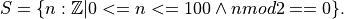
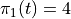
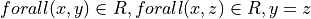
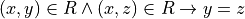

7. Set Theory¶
Modern mathematics is largely founded on set theory: in particular, on what is called Zermelo-Fraenkel set theory with the axiom of Choice, or ZFC. Every concept you have ever learnedseen in mathematics can be reduced to expresions involving sets. For example, every natural number can be represented as a set: zero as the empty set ({}); one as the set containing the empty set ({{}}); two as the set that contains that set ({{{}}}); ad infinitum.
Set theory includes the treatment of sets and of special cases involving relations (sets of tuples), functions (sets of tuples that satisfying the constraint of being single0valued, sequences (sets with an ordering imposed on the elements, which can in turn be viewed as a function from natural number indices to set elements) and other related concepts. ZFC is a widely accepted formal foundation for modern mathematics: a set of axioms that describe properties of sets, from which all the rest of mathematics can be deduced.
Naive Set Theory¶
So what is a set? A naive definition (which will actually be good enough for our purposes and for most of practical computer science) is that a set is just an unordered collection of elements. In principle, these elements are themselves sets, all the way down to empty sets, but we don’t need to think in such reductionist terms. We can think about a set of natural number elements, for example, without having to think of each natural number as itself being some weird kind of set!
In practice, we just think sets as unordered collections of elements off some kind, where any given element is either in or not in any given set. Membership is binary. So, for example, when we combine two sets, each containing some common element, the resulting combined set will have that element as a member, but it won’t have it twice.
This chapter introduces naive, which is to say intuitive and practical, set theory. It does not cover axiomatic set theory, in which every concept is ultimately reduced to a set of logical axioms that define what precisely it means to be a set and how sets behave.
Overly Naive Set Theory¶
Before we go on, however, we review a bit of history to understand that an overly naive view of sets can lead to logical contradictions that make naive set theory completely useless as a logically sound foundation for mathematics.
One of the founders of modern logic, Gotlob Frege, had as his central mission to establish foundations of mathematics in symbolic logic. The concept of a set was central to his effort. His logic therefore allowed one to define sets as collections of elements that satisfy given propositions, and to talk about whether a given element is in a given set of not. Frege’s notion of sets, in turn, traced back to the seminal work of Georg Cantor.
Boom. In 1903, the British analytical philosopher, Bertrand Russell, published a paper presenting a paradox in what we now call naive set theory. Russell showed that a logic based on naive set theory would be inconsistent (self-contradicting) and thus useless as a logic.
To see the problem, one need only consider the set of all sets that do
not contain themselves. In mathematical set comprehension notation,
we would write this set, let’s call it S, as  That is, S is the set of elements, a, each itself
a set, such that a is not in (a member of) itself.
That is, S is the set of elements, a, each itself
a set, such that a is not in (a member of) itself.
Now ask the decisive question: Does S contain itself? Let’s make a
notation, C(S), to represent the idea that S contains itself. Now
suppose that C(S) is true, i.e., that S does contain itself. In
this case, S, being a set that contains itself, cannot be a member
of S, because we just defined S to be the set of sets that do
not contain themselves. The assumption that S containss itself
leads to the conclusion that S does not contain itself. In logical
terms,  This is a contradiction and
thus a logical impossibility.
This is a contradiction and
thus a logical impossibility.
Now suppose S does not contain itself:  . Being
such a set, and given that S is the set of sets that do not contain
themselves, it must now be in S. So
. Being
such a set, and given that S is the set of sets that do not contain
themselves, it must now be in S. So  The assumption that it does not contain itself leads right
back to the conclusion that it does contain itself. Either the set
does or does not contain itself, but assuming either case leads to a
contradictory conclusion. All is lost!
The assumption that it does not contain itself leads right
back to the conclusion that it does contain itself. Either the set
does or does not contain itself, but assuming either case leads to a
contradictory conclusion. All is lost!
That such an internal self-contradiction can arise in such a simple way (or at all) is a complete disaster for any logic. The whole point of a logic is that it gives one a way to reason that is sound, which means that from true premises one can never reach a contradictory conclusion. If something that is impossible can be proved to be true in a given theory, then anything at all can be proved to be true, and the whole notion of truth just collapses into meaninglessness. As soon as Frege saw Russell’s Paradox, he knew that that was game over for his profound attempt to base mathematics on a logic grounded in his (Cantor’s) naive notion of sets.
Two solutions were eventually devised. Russell introduced a notion of types, as opposed to sets, per se, as a foundation for mathematics. The basic idea is that one can have elements of a certain type; then sets of elements of that type, forming a new type; then sets of sets elements of that type, forming yet another type; but one cannot even talk about a set containing (or not containing) itself, because sets can only contain elements of types lower in the type hierarchy.
The concept of types developed by Russell lead indirectly to modern type theory, which remains an area of very active exploration in both computer science and pure mathematics. Type theory is being explored as an alternative foundation for mathematics, and is at the very heart of a great deal of work going on in the areas of programming language design and formal software specification and verification.
On the other hand, Zermelo repaired the paradox by adjusting some of the axioms of set theory, to arrive at the starting point of what has become ZFC. When we work in set theory today, whether with a naive perspective or not, we are usually working in a set theory the logical basic of which is ZFC.
Sets¶
For our purposes, the naive notion of sets will be good enough. We will take a set to be an unordered finite or infinite collection of elements. An element is either in or not in a set, and can be in a set at most once. In this chapter, we will not encounter any of the bizarre issues that Russell and others had to consider at the start of the 20th century.
What we will find is that set-theoretical thinking is an incredibly powerful intellectual tool. It’s at the heart of program specification and verification, algorithm design and analysis, and theory of computing, among many other areas in computer science. Moreover, Dafny makes set theory not only fun but executable. The logic of Dafny, for writing assertions, pre- and post-conditions, and invariants is set theory, a first-order logic with sets and set-related operations as built-in concepts.
Set Theory Notations¶
Display notation¶
In everyday mathematical writing, andin Dafny, we denote small sets by
listing the elements of the set within curly brace. If S is the set
containing the numbers, one, two, and three, for example, we can write
S as 
In Dafny, we would write almost the same thing.
var S:set<int> := { 1, 2, 3 }.
This code introduces the variable, S, declares that its type is
finite set of integer (iset<T> being the type of infinite sets
of elements of tyep T), and assigns to S the set value,  Because the value on the right side of the assignment
operator, is evidently a set of integers, Dafny will infer the type of
S, and the explicit type declaration can therefore be omitted.
Because the value on the right side of the assignment
operator, is evidently a set of integers, Dafny will infer the type of
S, and the explicit type declaration can therefore be omitted.
var S := { 1, 2, 3 }.
When a set is finite but too large to write down easily as a list of
elements, but when it has a regular structure, mathematicians often
denote such a set using an elipsis. For example, a set, S, of even
natural numbers from zero to one hundred could be written like this:
 This expression is a kind of
quasi-formal mathematics. It’s mostly formal but leaves details that
an educated person should be able to infer to the human reader.
This expression is a kind of
quasi-formal mathematics. It’s mostly formal but leaves details that
an educated person should be able to infer to the human reader.
It is not (currently) possible to write such expressions in Dafny. Dafny does not try to fill in missing details in specifications. A system that does do such a thing might make a good research project. On the other hand, ordinary mathematical writing as well as Dafny do have ways to precisely specify sets, including even infinite sets, in very concise ways, using what is called set comprehension or set builder notation.
Set comprehension notation¶
Take the example of the set, S, of even numbers from zero to one hundred, inclusive. We can denote this set precisely in mathematical writing as  Let’s pull this expression apart.
The expression on the right of the equals sign can be read in three parts. The vertical bar is read such that. To the left of the bar is an expression identifying the set from which the elements of this set are drawn, and a name is given to an arbitrary element of this source set. So here we can say that S is a set each element n of which is a natural number. A name, here n, for an arbitrary element is given for two purposes. First it desribes the form of elements in the set being built: here just integers. Second, the name can then be used in writing a condition that must be true of each such element. That expression is written to the right of the vertical bar.
Here the condition is that each such element, n must be greater than or equal to zero, less than or equal to one hundred, and even, in that the remainder must be zero when n is divided by 2. The overall set comprehension expression is thus read literally as, S is the set of integers, n, such that n is greater than or equal to zero, n is less than or equal to 100, and n evenly divisible by 2. A more fluent reading would simply be S is the set of even integers between zero and one hundred inclusive.
Dafny supports set comprehension notations. This same set would be written as follows (we assume that the type of S has already been declared to be set<int>):
S := set s: int | 0 <= s <= 100;
Another way to define the same set in ordinary mathematical writing would use a slightly richer form of set comprehension notation. In particular, we can define the same set as the set of values of the expression 2*n for n is in the range zero to fifty, inclusive. Where it’s readily inferred, mathematicians will usually also leave out explicit type information. `S = { 2 * n | 0 <= n <= 50 }. In this expression it’s inferred that n ranges over all the natural numbers, these values are filtered by the expression on the right, and these filtered values are then fed through the expression on the left of the bar to produce the elements of the intended set.
Dafny also supports set comprehension notation in this style. To define this very same set in Dafny we could also write this:
S := set s: int | 0 <= s <= 50 :: 2 * s;
This command assigns to S a set of values, 2 * s,, where s ranges over the integers and satisfies the predicate (or filter) 0 <= s <= 50.
The collection of values from which element are drawn to be
build into a new set need not just be a built-in type but can
be another programmer-defined set. Given that S is the set
of even numbers from zero to one hundred, we can define the
subset of S of elements that are less than 25 by writing
a richer set comprehension. In pure mathematical writing, we
could write  That is,
T is the set of elements that are in S and less than 25.
The Dafny notation is a little different, but not too much:
That is,
T is the set of elements that are in S and less than 25.
The Dafny notation is a little different, but not too much:
var T := set t | t in S && t < 25;
This Dafny code defines T to be the set (of integers, but note that we let Dafny infer the type of t in this case), such that t is in the set S (that we just defined) and t is also less than 25.
As a final example, let’s suppose that we want to define the set of
all ordered pairs whose first elements are from S and whose second
elements are from T, as we’ve defined them here. For example, the
pair (76,24) would be in this set, but not (24 76). In ordinary
mathematical writing, this would be  This set is, as we’ll learn more about shortly, called the
product set of the sets, S and T.
This set is, as we’ll learn more about shortly, called the
product set of the sets, S and T.
In Danfy, this would be written like this:
var Q := set s, t | s in S && t in T :: (s, t);
This code assigns to the new variable, Q, a set formed by taking elements, s and t,, such that s is in S and t is in T, and forming the elements of the new set as tuples, (s, t). This is a far easier way to write code for a product set than by explicit iteration over the sets S and T!
In Dafny, the way to extract an element of a tuple, t, of arity, n, is by writing t.n, where n is a natural number in the range 0 up to n - 1. So, for example, (3, 4).1 evaluates to 4. It’s not a notation that is common to many programming languages. One can think of it as a kind of subscripting, but using a different notation than the usual square bracket subscripting used with sequences.
Set Operations¶
Cardinality¶
By the cardinality of a set, S, we mean the number of elements
in S. When S is finite, the cardinality of S is a natural number.
The cardinarily of the empty set is zero, for example, because it has
no (zero) elements. In ordinary mathematics, if S is a finite set,
then its cardinality is denoted  . With S defined as in
the preceding section, the cardinality of S is 50. (There are
50 numbers between 0 and 49, inclusive.)
. With S defined as in
the preceding section, the cardinality of S is 50. (There are
50 numbers between 0 and 49, inclusive.)
The Dafny notation for set cardinality is just the same. The following code will print the cardinality of S, namely 50, for example.
print |S|;
If a set is infinite in size, as for example is the set of natural numbers, the cardinality of the set is obviously not any natural number. One has entered the realm of transfinite numbers. We will discuss transfinite numbers later in this course. In Dafny, as you might expect, the cardinality operator is not defined for infinite sets (of type iset<T>).
Equality¶
Two sets are considered equal if and only if they contain exactly the same elements. To assert that sets S and T are equal in mathematical writing, we would write S = T. In Dafny, such an assertion would be written, S == T.
Subset¶
A set, T, can be said to be a subset of a set S if and only if
every element in T is also in S. In this case, mathematicians
write  . In logical notation, we would write,
. In logical notation, we would write,
 . That is, T is a
subset of S if and only if every element in T is also in S.
. That is, T is a
subset of S if and only if every element in T is also in S.
A set T, is said to be a proper subset of S, if T is a subset
of S but T is not equal to S. This is written in mathematics as
 . In other words, every element of T is in S but
there is at least one element of S that is not in T.
. In other words, every element of T is in S but
there is at least one element of S that is not in T.
In our example, T (the set of even natural numbers less than 25) is a proper subset of S (the set of even natural numbers less than or equal to 100).
In Dafny, one uses the usual arithmetic less and and less than or equal operator symbols, < and <=, to assert proper subset and subset relationships, respectively. The first two of the following assertions are thus both true in Dafny, but the third is not. That said, limitations in the Dafny verifier make it hard for Dafny to see the truth of such assertions without help. We will not discuss how to provide such help at this point.
assert T < S;
assert T <= S;
assert S <= T;
We note every set is a subset, but not a proper subset, of itself. It’s also the case that the empty set is a subset of every set, in that all elements in the empty set are in any other set, because there are none. In logic-speak, we’d say a universally quantified proposition over an empty set is trivially true.
If we reverse the operator, we get the notion of supersets and proper
supersets. If T is a subset of S, then S is a superset of T,
written,  . If T is a proper subset of S then
S is a proper superset of T, written
. If T is a proper subset of S then
S is a proper superset of T, written  . In
Dafny, the greater than and greater than or equals operator are used
to denote proper superset and superset relationships between sets.
So, for example, S >= T is the assertion that S is a superset of
T. Note that every set is a superset of itself, but never a proper
superset of itself, and every set is a superset of the empty set.
. In
Dafny, the greater than and greater than or equals operator are used
to denote proper superset and superset relationships between sets.
So, for example, S >= T is the assertion that S is a superset of
T. Note that every set is a superset of itself, but never a proper
superset of itself, and every set is a superset of the empty set.
Intersection¶
The intersection,  , of two sets, S and T, is the
set of elements that are in both S and T. Mathematically speaking,
, of two sets, S and T, is the
set of elements that are in both S and T. Mathematically speaking,
 . In Dafny, the *
operator is used for set intersection. The intersection of S and
T is thus written S * T. For example, the command Q := S * T
assigns the intersection of S and T as the new value of Q.
. In Dafny, the *
operator is used for set intersection. The intersection of S and
T is thus written S * T. For example, the command Q := S * T
assigns the intersection of S and T as the new value of Q.
Union¶
The union,  , of two sets, S and T, is the set of
elements that are in either (including both) S and T. That is,
, of two sets, S and T, is the set of
elements that are in either (including both) S and T. That is,
 . In Dafny, the +
operator is used for set union. The unionof S and T is thus
written S + T. For example, the command V := S + T assigns the
union of S and T as the new value of V.
. In Dafny, the +
operator is used for set union. The unionof S and T is thus
written S + T. For example, the command V := S + T assigns the
union of S and T as the new value of V.
Difference¶
The difference, S\T (S minus T), of sets S and T is the set of elements in S that are not also in T. Thus, :math:`S setminus T = {e~|~e in S land e notin T). In Dafny, the minus sign is used to denote set difference, as in the expression, S - T. Operators in Dafny can be applied to sets to make up more complex expressions. So, for example, |S-T| denotes the cardinality of S-T.
Product Set¶
The product set,  , is the set of all the ordered
pairs, (s,t), that can be formed by taking one element, s, from
S, and one element, t, from T. That is,
, is the set of all the ordered
pairs, (s,t), that can be formed by taking one element, s, from
S, and one element, t, from T. That is,  . The cardinality of a product set
is the product of the cardinalities of the individual sets.
. The cardinality of a product set
is the product of the cardinalities of the individual sets.
There is no product set operator, per se, in Dafny, but given sets, S and T a product set can easily be expressed using Dafny’s set comprehension notation: set s, t: s in S && t in T :: (s,t). The keyword, set, is followed by the names of the variables that will be used to form the set comprehension expression, followed by a colon, followed by an assertion that selects the values of s and t that will be included in the result, followed by a double colon, and then, finally an expression using the local variables that states how each value of the resulting set will be formed.
Power Set¶
The power set of a set, S, denoted  is the
set of all subsets of S. If S = {1, 2 }, for example, the powerset
of S is the set containing the proper and improper subsets of S,
namely {}, { 1 }, { 2 }, and { 1, 2}.
is the
set of all subsets of S. If S = {1, 2 }, for example, the powerset
of S is the set containing the proper and improper subsets of S,
namely {}, { 1 }, { 2 }, and { 1, 2}.
The powerset of a set with n element will have  elements.
Consider the powerset of the empty set. The only subset of the empty
set is the empty set itself, so the powerset of the empty set is the
set containing only the empty set. This set has just 1 element. It’s
cardinality thus satisfies the rule, as 2 to the power, zero (the
number of elements in the empty set), is 1.
elements.
Consider the powerset of the empty set. The only subset of the empty
set is the empty set itself, so the powerset of the empty set is the
set containing only the empty set. This set has just 1 element. It’s
cardinality thus satisfies the rule, as 2 to the power, zero (the
number of elements in the empty set), is 1.
Now suppose that for every set, S, with cardinality n, the cardinality of its powerset is 2 to the n. Consider a set, S’, of cardinality one bigger than that of S. Its powerset contains every set in the powerset of S, plus every set in that set with the new element included, and that’s all the element it includes.
The number of sets in the powerset of S’ is thus double the number of sets in the powerset of S. Given that the cardinality of the powerset of S is 2 to the n, the cardinality of S’, being twice that number, is 2 to the n + 1.
Now because the rule holds for sets of size zero, and whenver it holds
for sets of size n it also holds for sets of size n + 1, it must
hold for sets of every (finite) size. So what we have is an informal
proof by induction of a theorem:  .
.
In Dafny, there is no explicit powerset operator, one taking a set and returning its powerset, but the concept can be expressed in an extremely elegant form using a set comprehension notation (in both pure mathematics and in Dafny). The solution is to say simple the set of all sets that are subsets of a given set, S. The follwing three line program prints out the powerset of S = { 1, 2, 3 }. The key expression is to the right of the assignment operator on the second line.
var S := { 1, 2, 3 };
var P := set R | R <= S;
print P;
Simple exercise: Write a pure function that when given a value of type set<T> returns its powerset. The function will have to be polymorphic. Call it powerset<T>.
Tuples¶
A tuple is an ordered collection of elements. The number of elements in a tuple is called its arity. Ordered pairs are of arity, 2. An ordered triple is of arity, 3. A tuple of arity 2 is called an ordered pair. A tuple of arity 3 is often called a triple. For a larger arity, n, a tuple with that arity is called an n-tuple. The tuple, (7, X, “house”, square_func), for example, can be said to be a 4-tuple.
The elements of a tuple are in general not of the same type, or drawn from the same sets. In the example here, the first element appears to be an integer, the second, a variable, the third, a string, and last, the name of some function.
Tuples are properly understood as values taken from a set product. If
S and T are our sets of even numbers between zero and one hundred,
and zero and twenty four, respectively, for example, then the ordered
pair, (60,24) is an element of the product set .
If one is being careful about types, whether in general mathematical
discourse or in programming, then the type of a tuple is defined as
the tuple of the types of its elements. In the example here, the type
of S (using Dafny notation) is set<int>, and the type of T is
also set<int>, so the type of elements in is the
type, (int, int). In general the type of a tuple in a set product,
::S_1 times S_2 times ldots time S_n, where the types of these
sets are  is
is  .
.
While all of this might seem a little abstract, it’s actually simple and very useful. Any table of data, such as a table with columns that hold names, birthdays, and social security numbers, represents data in a product set. One set is the set of names, the second set is the set of birthdays. The third is the set of social security numbers. Each row in such a table is just a particular tuple in such a set product.
Each row is a tuple. We call each element of a tuple a field. An n-tuple will have n fields, which we conventionally refer to by indices ranging from 0 to n-1.
We are often interested in the value of a particular field of a tuple. We can used subscripting as a way to extract the value of a particular field from a tuple. We can view such an extraction operation as a function from tuple values to field values. We call such functions projection functions.
An n-tuple will have n project functions, often denoted using the greek letter, pi, with a (zero-based) subscript indicating which element the project function projects out of a given tuple. If for example, t is the 3-tuple, 12, 4, 6), then .
In Dafny, tuples are written as they are in mathematics, as lists of field values separated by commas and enclosed in parentheses. For example t := (1, “hello”, [1,2,3])” assigns to *t a 3-tuple whose first field has the value, 1 (of type int); whose second field has the value, “hello”, a string; and whose third element is the list of integers, [2, 4, 6]. Projection in Dafny is accomplished using the subscripting operation. So, for example, t[1] in this case has the value, 4.
Relations¶
A relation in nothing but a subset of (the tuples in) a product set. A table such as the one described will, in practice, usually not have a row with every possible combination of names, birthdays, and SSNs. In other words, it won’t contain every tuple in the product of the sets from which the values in the respective columns are drawn (the set of all names, the set of all birthdays, and the set of all SSNs in this case).
In mathematical writing, we will thus often see a sentence of the
form, Let  be a relation. All this says
is that R is some subset of the set of all tuples in the product set
of S and T. If S = { hot, cold } and T = { cat, dog }, then
the product set is { (hot, cat), (hot, dog), (cold, cat), (cold, dog)
}, and a relation on S and T is any subset of this product set.
The set, { (hot, cat), (cold, dog) } is one such relation.
be a relation. All this says
is that R is some subset of the set of all tuples in the product set
of S and T. If S = { hot, cold } and T = { cat, dog }, then
the product set is { (hot, cat), (hot, dog), (cold, cat), (cold, dog)
}, and a relation on S and T is any subset of this product set.
The set, { (hot, cat), (cold, dog) } is one such relation.
Here’s an exercise. If S and T are finite sets, |S| = n and |T| = m, how many relations are there over S and T? First, how many tuples are in the product set? Second, how many subsets are there of that set? For fun, write a little Dafny program. should take two sets of integers as arguments as return the number of relations over them. Dafny does not provide a built-in exponentiation funciton, but you can now write one yourself (in fact, you’ve already done this). Here’s a test case: the number of relations over sets of cardinalities 4 and 5 is about a million.
Binary Relations and Functions¶
Binary relations are relations over products of 2 sets. The first set is called the domain of the relation. The second set is called the co-domain of the relation. That is, a binary relation is a subset of the ordered pairs in a product of the given domain and codomain sets.
The everyday functions you have studies in mathematics are binary relations, albeit usually infinite ones. For example, the square function, that associates every real number with its square can be understood as the infinite set of ordered pairs of real numbers in which the second is the square of the first. Mathematically this is :{ (x, y) | y = x^2 }:`, where we take as implicit that x and y range over the real numbers. Elements of this set include the pairs, (-2, 4) and (2, 4).
The concept of square roots of real numbers is also best understood as a relation. The tuples are again pairs of real numbers, but now the elements include tuples, (4, 2) and (4, -2).
Functions are Single-Value Binary Relations¶
A binary-relation is said to be single-valued if it does not have
two tuples with the same first element and different second elements.
A different way to say this is that if (x, y) and (x, z) are two
elements in a single-valued binary relation (with the same first
element, x) then it must be that x and y are the same value, for
otherwise the relation would not be single-valued. To be more precise,
then, a relation, , is single valued if
. In logical
notation, .
A single-valued binary relation is also called a function. And by a function in mathematics, we means exactly a single-valued relation. The square relation is a function, in that for any given number there is only one associated square of that number. The relation is single-valued in exactly this sense. By contrast, the square root relation is not a function, because for any given non-negative real number, there are two associated square roots. The relation is not single-valued.
There are several ways to represent functions in Dafny, or in most any other modern programming language. In Dafny one can represent a function as a pure functional program, one can use a method, but for our purposes here, it is the representation of a function from values of type S to values of type T as a map<S,T> that is pertinent. A map is nothing other than an explicit representation of a function as a set of pairs.
Exercise: Write a method (or a function) that when given a map<S,T> as an argument returns a set<(T,S)> as a result where the return result represents the inverse of the map. The inverse of a function is not necessarily a function so the inverse of a map cannot be represented as a map, in general. Rather, we represent the inverse just as a set of (S,T) tuples.
Exercise: Write a pure function that when given a set of ordered pairs returns true if, viewed as a relation, the set is also a function, and that returns false, otherwise.
Exercise: Write a function or method that takes a set of ordered pairs with a pre-condition requiring that the set satisfy the predicate from the preceding exercise and that then returns a map that contains the same set of pairs as the given set.
Exercise: Write a function that takes a map as an argument and that returns true if the function that it represents is invertible and that otherwise returns false. Then write a function that takes a map satisfying the precondition that it be invertible and that in this case returns its inverse, also as a map.
Total vs Partial¶
A binary relation is said to be total if every element of its domain appears as the first element in at least one tuple. We say that the relation is defined for each such element. A relation that is not total is said to be partial. And these terms are applied to functions as well.
Exercises: Is the function y = x on the real numbers total? Is the square root function on the domain of the real numbers total? Answer: No, because it’s not defined for any real numbers less than zero. Is the log function defined on the non-negative real numbers? Answer: no, because it’t not defined at x = 0. Is the SSN function, that assigns a U.S. social security number to a person total? No, not every person has a social security number.
Implementing partial functions as methods or pure function in software presents certain problems. Either a pre-conditions has to be enforced to prevent the function of method being called with a value for which it’s not define, or the function or method needs to be made total by returning some kind of error value if it’s called with such a value. In this case, callers of the function are obligated always to check whether some real function value was return or whether none was, but rather an error flag. The failure of programmers systematically to check for such error returns is a ubiquitous source of bugs in real software.
By enforcing a requirement that every loop and recursion terminates, Dafny demands that every function and method be total in the sense that it returns and that it returns some value of the type, if any, that it promises to return. When a Dafny total function is used to implement a mathematical function that is partial, the problem thus arises what to return for inputs not in the domain of the partial function being implemented. A little later in the course we will see a nice way to handle this issue using what are called option types. An option type is like a box that contains either a good value or an error flag; and to get a good value out of such a box, one must explicitly check to see whether the box has a good value in it or, alternatively, and error flag.
Inverse¶
The inverse of a given binary relation is simply the set of tuples
formed by reversing the order of all of the given tuples. To put this
in mathematical notation, if R is a relation, its inverse, denoted
::R^{-1}, is  . You can see this
immediately in our example of squares and square roots. One contains
the tuples, (-2, 4), (2, 4), while the other contains (4, 2), (4,
-2).
. You can see this
immediately in our example of squares and square roots. One contains
the tuples, (-2, 4), (2, 4), while the other contains (4, 2), (4,
-2).
It should immediately be clear that the inverse of a function is not always also a function. Indeed, the inverse of the square function is the square root relation, but that relation is not itself a function.
A function whose inverse is also a function is said to be invertible. The function, f(x) = x (or y = x if you prefer) is invertible in this sense. In fact, its inverse is itself. Is the cube root function invertible? (That’s an exercise for the reader. Now prove it with a rigorous argument.)
Injective¶
A relation (and in particular, a function) is said to be injective if no two elements of the domain are associated with the same element in the co-domain.
The square function is a function because it is single-valued, but it is not injective. To see this, one need only to observe that two different values in the domain, -2 and 2, have the same squared value in the co-domain, namely 4.
Exercises: Write a precise mathematical definition of what it means for a binary relation to be injective. Is the cube root function injective? Is f(x) = sin(x) injective?
Surjective¶
A binary relation, and in particular a function, is surjective if every element in the co-domain appears in some tuple in the relation. In other words, the range of the relation or function, which one can think about as the set of output values, covers the co-domain. The function, f(x) = x (or y = x if you prefer), where x and y are real numbers, is surjective, because for every possible value of y there is some x such that f(x) = y. By contrast, the function, f(x) = sin(x), viewed as a function from the real numbers (on the x-axis) to real numbers (on the y-axis) is not surjective, because the “output” values of this function are constrained to the range [0,1].
Bijective¶
A function (already a single-valued relation), is said to be bjective if it is also both injective and surjective. Such a function is also often called a bijection. A bijection estabishes a one-to-one correspondence between elements of two sets. Each element in the domain maps to a different element in the co-domain (injective) and every element in the co-domain is mapped to be some element in the domain (surjective). Therefore, it is also the case that every element in the co-domain can be mapped back to the single element that mapped to it. So the inverse of a bijection is also a function and is also a bijection. Bijections can only be established between sets of the same size.
Exercise: Make a rigorous argument that that last stement is true. Try showing that the assumption that you can establish a bijection between sets of different sizes leads to some kind of contradiction.
Exercise: How many distinct bijections are there between two sets each of cardinality 3? Generalize: how many bijections are there between two sets of cardinality k? Hint: Pick a first element in the first set. There are n ways to map it to some element in the second set. For the second element in the first set, there are only (n-1) ways, as one cannot map it to the element chosen in the first step, as that would violate the injectivity property. Continue this line of reasoning until you get down to all elements having been mapped.
Reflexive¶
We now consider properties of certiain special kinds of binary
relations, starting with relations that maps sets to themselves. A
relation that maps real numbers to real numbers is a subset of
 , for example. The friends
relation on a social network site associates people with people.
, for example. The friends
relation on a social network site associates people with people.
Such a relation is said to be reflexive if (perhaps among other properties) it (at least) associates every element with itself. The equality relation (e.g., on real numbers) is the “canonical” example of a reflexive relation. It associates every number with itself and with no other number. The tuples of the equality relation on real numbers thus includes (2.5, 2.5) and (-3.0, -3.0)* but definitely not (2.5, -3.0).
In more mathematical terms, consider a set S and a bindary relation,
R, on S*S, :math:R subseteq S times S.` R is said to be
reflexive, which we can write as Reflexive(R), iff and only if for
every e in S, the tuple (e,e) is in R. Or to be rigorous about
it, 
Exercise: Is the function, y = x, reflexive? If every person loves themself, is the loves relation reflexive? Is the less than or equals relation reflexive? Hint: the tuples (2,3) and (3,3) are in this relation becaue 2 is less than or equal to 3, and so is 3, but (4,3) is not in this relation, because 4 isn’t less than or equal to 3. Is the less than relation reflexive?
Symmetric¶
A binary relation, R, on a set S is said to be symmetric if whenever the tuple (x,y) is in R, the tuple, (y,x) is in R as well. On Facebook, for example, if Joe is “friends” with “Tom” then “Tom” is necessarily also friends with “Joe.” The Facebook friends relation is thus symmetric in this sense.
More formally, if R is a binary relation on a set S, i.e., given
 , then
, then  .
.
Question: is the function y = x symmetric? How about the square function? In an electric circuit, if a conducting wire connects terminal T to terminal Q, it also connects terminal Q to terminal T in the sense that electricity doesn’t care which way it flows over the wire. Is the connects relation in electronic circuits symmetric? If A is near B then B is near A. Is nearness symmetric? In the real work is the has-crush-on relation symmetric?
Transitive¶
Given a binary relation , R is said to
be transitive if whenever (x,y) is in R and (y,z) is in R,
then (x,z) is also in R. Formally,  .
.
Exercise: Is equality transitive? That is, if a = b and b = c it is also necessarily the case that a = c? Answer: Sure, any sensible notion of an equality relation has this transitivity property.
Exercise: What about the property of being less than? If a < b and b < c is it necessarily the case that a < c? Answer: again, yes. The less than, as well as the less than or equal, and greater then, and the greater than or equal relations, are all transitive.
How about the likes relation amongst real people. If Harry likes Sally and Sally likes Bob does Harry necesarily like Bob, too? No, the human “likes” relation is definitely not transitive. (And this is the cause of many a tragedy.)
Equivalence¶
Finally (for now), a relation is said to be an equivalence relation
if it is reflexive, transitive, and symmetric. Formally, we can write
this property as a conjunction of the three individual properties:
 . Equality is the canonical example of an equivalence
relation: it is reflexive (x = x), symmetric (if x = y then y =
x) and transitive (if x = y and y = z then x = z.).
. Equality is the canonical example of an equivalence
relation: it is reflexive (x = x), symmetric (if x = y then y =
x) and transitive (if x = y and y = z then x = z.).
An important property of equivalence relations is that they divide up a set into subsets of equivalent values. As an example, take the equivalence relation on people, has same birthday as. Clearly every person has the same birthday as him or herself; if Joe has the same birthday as Mary, then Mary has the same birthday as Joe; and if Tom has the same birthday as mary then Joe necessarily also has the same birthday as Tom. This relation thus divides the human population into 366 equivalence classes. Mathematicians usually use the notation a ~ b to denote the concept that a is equivalent to b (under whatever equivalence relation is being considered).
Sequences¶
A sequence of elements is an ordered collection in which elements can appear zero or more times. In both mathematical writing and in Dafny, sequences are often denoted as lists of elements enclosed in square brackets. The same kinds of elisions (using elipses) can be used as shorthands in quasi-formal mathematical writing as with set notation. For example, in Dafny, a sequence s := [1, 2, 3, 1] is a sequence of integers, of length four, the elements of which can be referred to by subscripting. So s[0] is 1, for example, as is s[3].
While at first a sequence might seem like an entirely different kind of thing than a set, in reality a sequence of length, n, is best understood, and is formalized, as a binary relation. The domain of the relation is the sequence of natural numbers from 0 to n-1. These are the index values. The relation then associates each such index value with the value in that position in the sequence. So in reality, a sequence is a special case of a binary relation, and a binary relation is, as we’ve seen, just a special case of a set. So here we are, at the end of this chapter, closing the loop with where we started. We have seen that the concept of sets really is a fundamental concept, and a great deal of other machinery is then built as using special cases, including relations, maps, and sequences.
Tuples, too, are basically maps from indices to values. Whereas all the values in a sequence are necessarily of the same type, elements in a tuple can be of different types. Tuples also use the .n notation to apply projection functions to tuples. So, again, the value of, say, (“hello”, 7).1 is 7 (of type int), while the value of (“hello”, 7).0 is the string, “hello.”